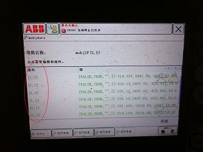
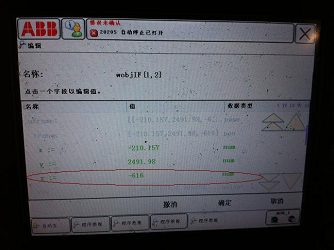
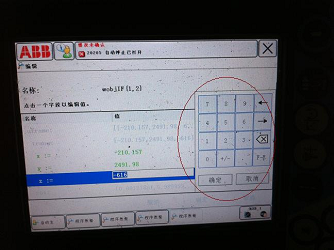

成品库拆垛机器人修改坐标参数
适用范围
适用于ABB机器人
作业准备 (安全评估、工具准备)
作业安全因素
防止工具伤人
防止电机坠落
工具准备
作业步骤
成品出库机器人抓取烟箱分为硬包和软包两组参数，目前烟箱类型有旧烟箱、外来烟、新烟箱，由于旧烟箱和外来烟经过运输和人工搬运码垛后，与自产的新烟箱在尺寸方面存在较大误差，导致机器人在抓取烟箱过程报警较为频繁，需人工对机器人的Z坐标参数进行修改，以抵消烟箱尺寸的误差，降低机器人报警的次数。
1)将机器人钥匙开关打到“手动”状态
2)单击手操器触摸屏上“程序数据”
3)双击“wobjdata”
4)双击“数组”
5)单击相应的组件

6)单击Z字段

7)通过小键盘修改坐标参数，减小数值为压低，增大数值为抬高，建议每次修改以3mm为单位

8)修改数值后点击“确定”
9)点击“关闭”

10)点击“pp移到main”手动操作机器人回原点
11)将机器人打回自动状态继续生产,若需再修改重复上述过程
效果检查
验收标准
各零部件并无变形
电机正常无损坏
作业结束
收拾现场，零件是否漏装，工具无遗落
最后保持现场清洁
总结
装配过程应注意配合要求，防止安装失败
安装过程需要对编码器参数进行校准